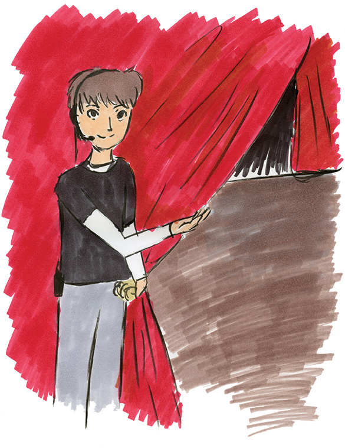
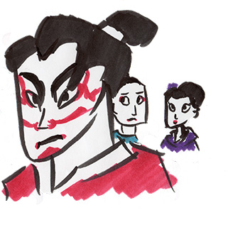
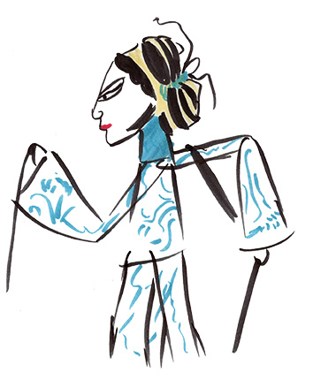

All the world’s a stage ... and we are not the only players. Al the world’s a stage ... and has been for a thousand of years. Act now - read below to find out more! All the world’s a stage.
Theatre is a huge part of our lives.The desire to be in awe of many, to share our gifts with the world, to simply be a part of something big – these are all the makings of theatre. But theatre isn’t a recent development, nor is only Shakespeare or Broadway, or a strict set of rules. People all over the world have been performing, writing, and teaming up together to wow audiences since ancient times!
When you think about it, everyone has seen and been a part of some form of theatre at some point in their lives, as have their parents, and so forth. You were probably longing for the main role in the class play in school (and ended up playing a tree). But the big question is, why exactly is theatre such a big part of our lives, and how has it survived so long? Back in ancient Greece, the earliest form of what is now Western theatre was slowly developed from the festivals of Dionysius, god of wine. Initially, plays were only performed by 3 people until gradually more roles were created. They were performed in large theatrons, which were wide open theatre buildings constructed on hill slopes. The theatron consisted of the skene (stage backdrop, backstage area for changing costumes), the orchestra (main performance area), and of course the audience. There were no professional actors in these productions; everyone who participated was an amateur. Roman theatre was developed around this time or later, and “borrowed” ideas from its Greek counterpart, however the plays were often less philosophical and were not as religiously based as Greece. Comedy was also the most popular as opposed to tragedy.
"Theatre is a medium that can transmit ideas."
Long before the roots of Western theatre emerged, the earliest form of theatre known to date is the ancient Egyptian theatre, which dates back to 2000BC. It was mainly meant for show rather than telling narrative and is described as “pageant –like”. Several hundred years later, the beginnings of the classic Chinese Shadow Puppet theatre can be traced back to as early as 1300BC. Shadow puppeteering has been passed on throughout thousands of years’ worth of generations and still remains as an important part of Chinese folk heritage, particularly in communities and rural areas. This technique has become popular in the Western world as an alternative art form or animation style.
As for the rest of Europe, theatre seemed to slowly develop on its own. After the fall of the Roman Empire came the Dark Ages, during which the Christian Church was the strongest form of governing body. Not much is known about this period except that many performances would have been orally transmitted (as opposed to being written down) and many of these performers were often denounced by the church as being “worse than mime”.
Eventually the Church started developing small dramatisations of Bible stories, or liturgical drama, and depending on whether they were mystery (about Christ), miracle (about saints) or moral (about mans’ struggle for salvation), they were designed to convey a message in an entertaining format. Shakespeare isn’t the only timeless form of theatre, even though it may be the first that comes to mind. Other forms of theatre such as the classic Japanese Kabuki theatre still survive and are passed down through generations as well. Kabuki originated in the 17th Century and is believed to have evolved from flamboyant dances performed by Izumo no Okuni. Later the shogunate banned women participating in theatre, which led to men playing female roles. This has become a tradition practiced to this day.
On the other end of the spectrum, in 1933 the Takarazuka Revue was born; originating from a failing hotspring, it was created by Ichizo Kobayashi and features women in all roles including male and female. Unlike Kabuki however it is not limited to traditional plays – often described as “glamorous” the productions range from traditional stories to stage adaptions of popular Shoujo manga like Sailor Moon.
Like with all performance art, theatre is a medium that can transmit ideas, such as morals. This medium is often used as a way of political or social protest. For example, the Japanese Butoh theatre was created in protest to the changing culture of Japan in the 1960s after World War II. Created by a rebellious dancer named Tatsumi Hijikata, Butoh was intentionally created to protest against the increasingly Western dance scene at the time, as there was no purely “Japanese” style of dance at that time. Hijikata’s initial performances are described as “wild, primal and sexually explicit”, which naturally shocked people.
He believed that the way in which the dances were performed were returning dance to a more “organic” stance as opposed to the social graces and beauty. It captured the imagination of many young dancers and grew in popularity – there are still many schools today that teach the style, and it is also used to help aspiring actors to unleash their expressive potential, “to find and embrace hidden movements that lie buried beneath years of conditioned behaviour”.
Modern theatre has come a long way since the very first formats of theatre. The “rules” are practically non-existent to those who do not wish to follow the traditional setup however the foundations are still the same. Many performances can be adapted; these personal adaptations may range from a change of setting (e.g. outside performance instead of in a theatre) but often many plays such as Shakespeare’s Hamlet are given the “postmodern” treatment. This often includes casting the titular character as a female. For example, in 2011 the Sydney Theatre Company created a production of Hamlet in a “Gen Y” style; Hamlet was deliberately changed to a female, and as well as this the company tried to get students to interact with the play such as using Twitter to “explore the theme of surveillance in the play”. The actress who played Hamlet claims that she didn’t find the gender change a challenge at all, and that the main challenge was that Hamlet is “someone who retains an intellectual rigour and an ever-present philosophical debate [whilst] in the midst of great emotional trauma… That balance is really quite delicate.”